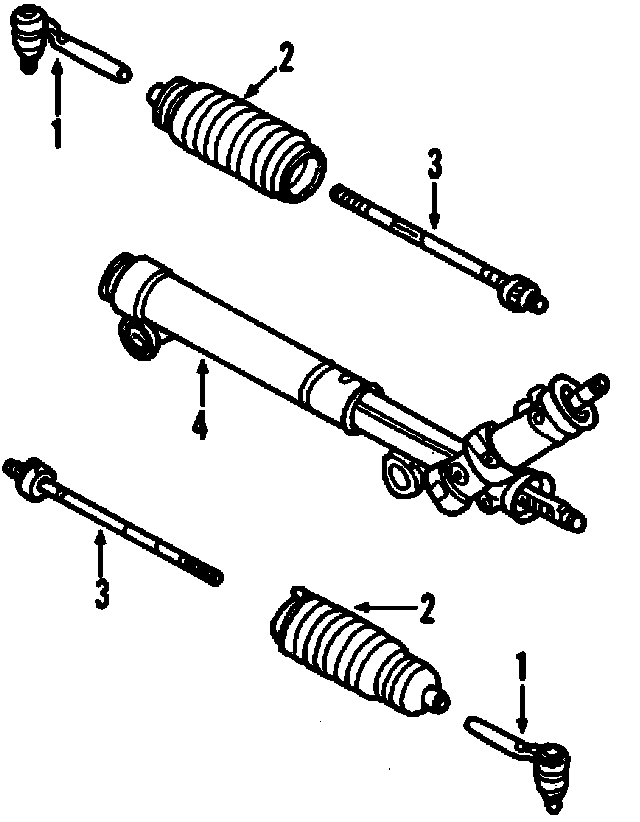
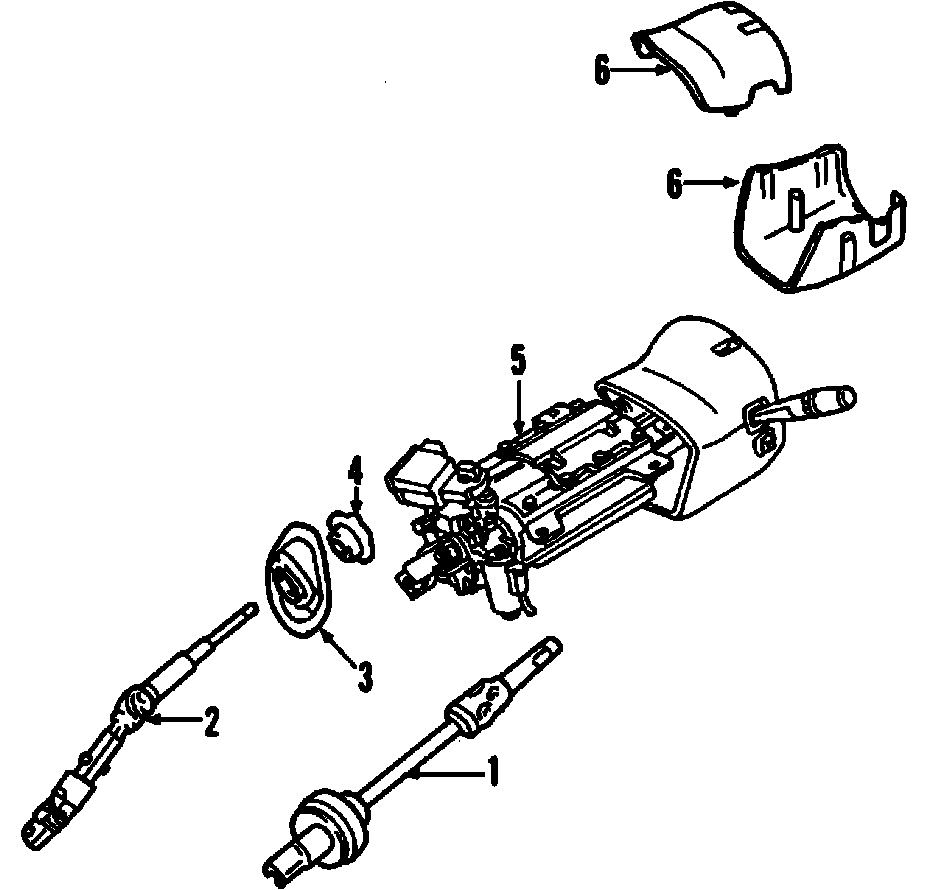

Operation CHARM
: Car repair manuals for everyone.
Home
>>
Cadillac
>>
2007
>>
Escalade ESV AWD V8-6.2L
>>
Parts and Labor
>>
Steering and Suspension
>>
Steering
>>
Images
Images
Steering Gear, Rack & Pinion Type:

Steering Column:
